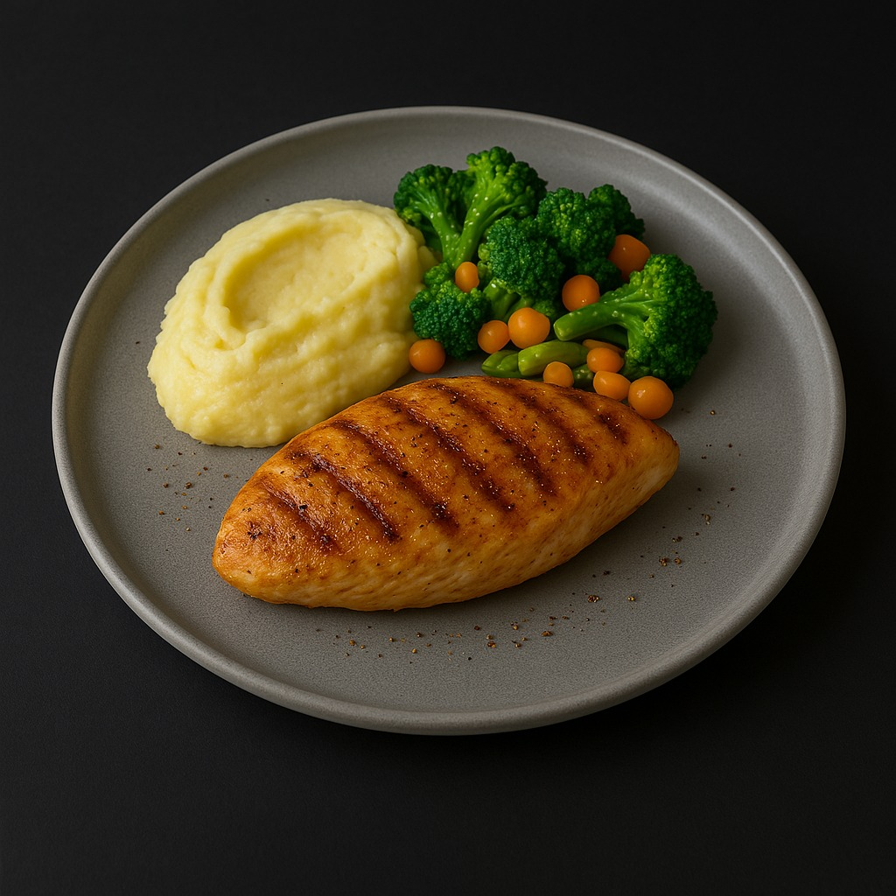
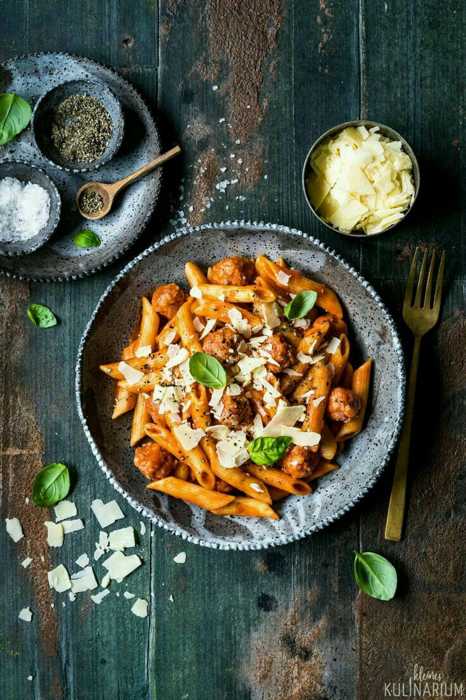
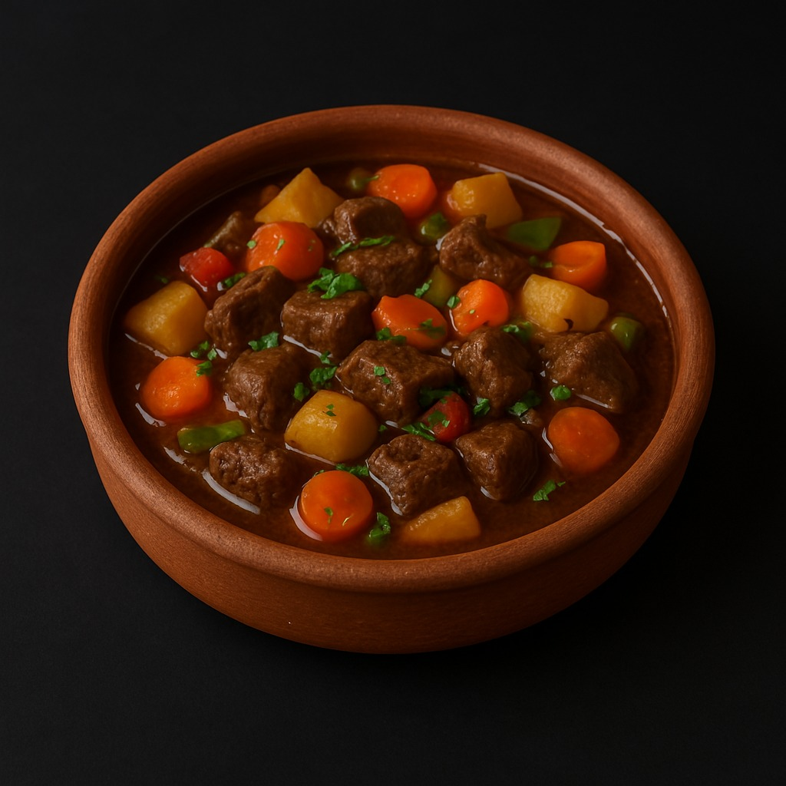
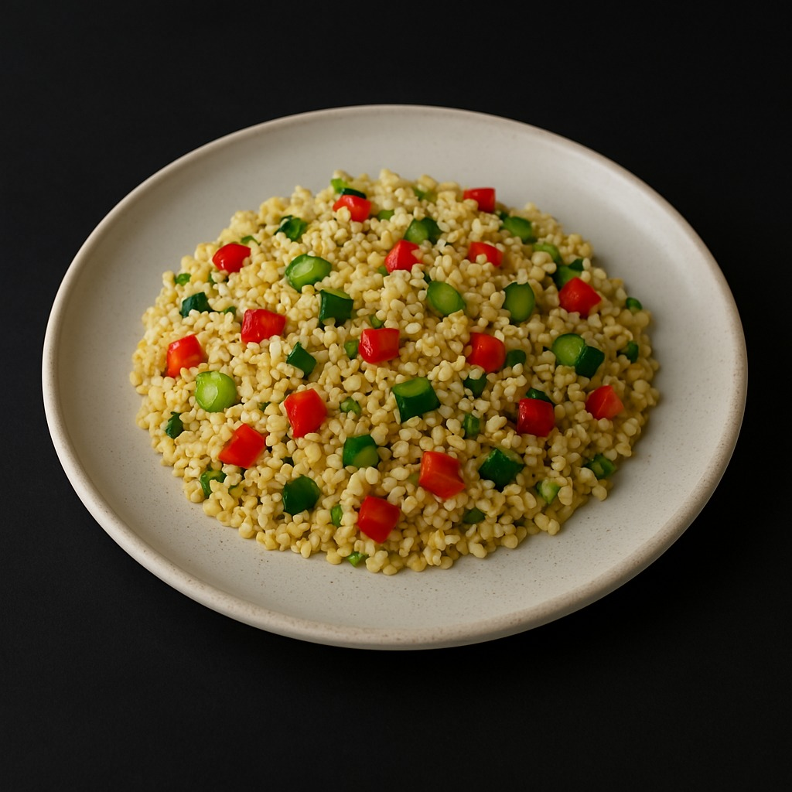
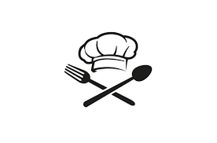

Izgara Tavuk

- Marine edilmiş tavuk göğsü
- Izgara sebzeler (kabak, biber, patlıcan)
- Acılı domates sos
- Yanında tereyağlı pirinç pilavı
Kremalı Makarna

- Fettucine makarna
- Krema, parmesan ve sarımsak sosu
- Roka ve domates ile süsleme
- İsteğe bağlı tavuk parçaları
Etli Güveç

- Kuzu eti, patates, havuç ve soğan
- Kekik ve biberiye ile tatlandırılmış
- Toprak güveçte fırınlanmış
- Tam buğday ekmeği ile servis
Sebzeli Kuskus

- Kuskus makarnası
- Kabak, havuç, biber, brokoli
- Zeytinyağlı hafif sos
- Üzerinde ince doğranmış maydanoz
👨🍳 Şefin Önerisi
|

|
Şefimizin bugünkü özel önerisi: Fırınlanmış Biber Dolması
Zeytinyağlı iç harcıyla doldurulmuş renkli biberler, özel baharatlarla harmanlanır ve taş fırında yavaşça pişirilir. Yanında naneli yoğurt ile servis edilir. Hafif ama doyurucu!
|
|